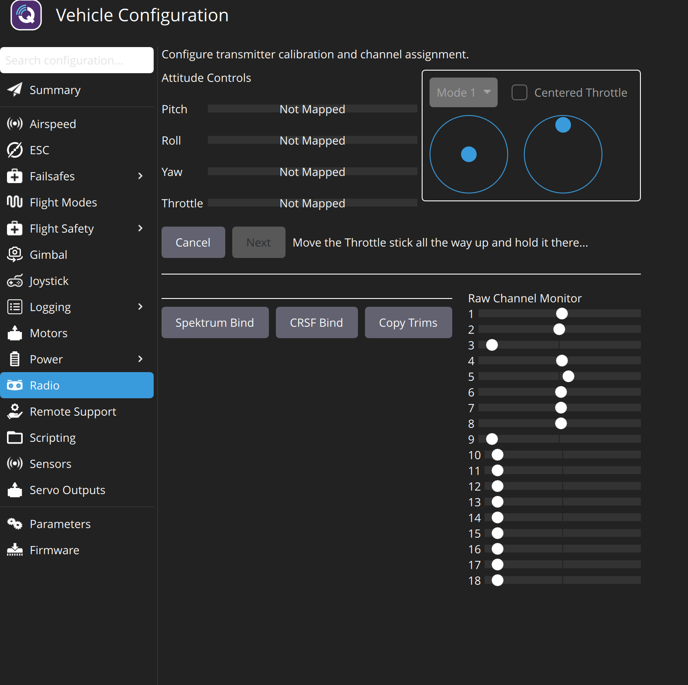
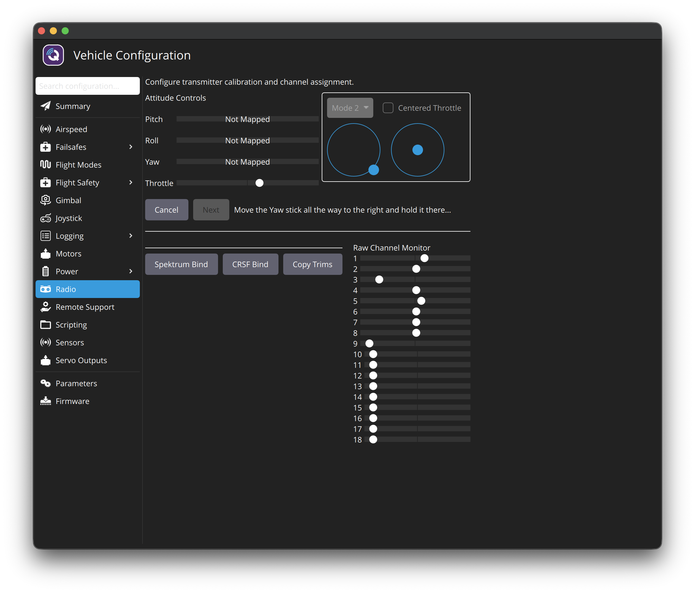
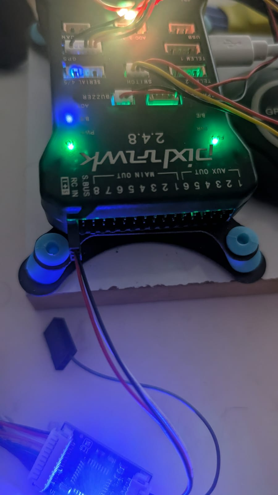
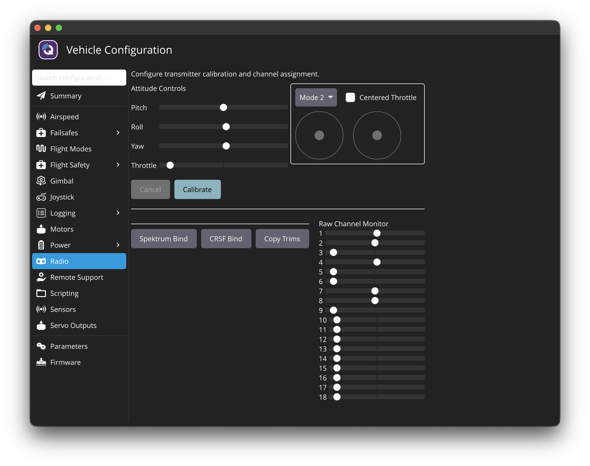
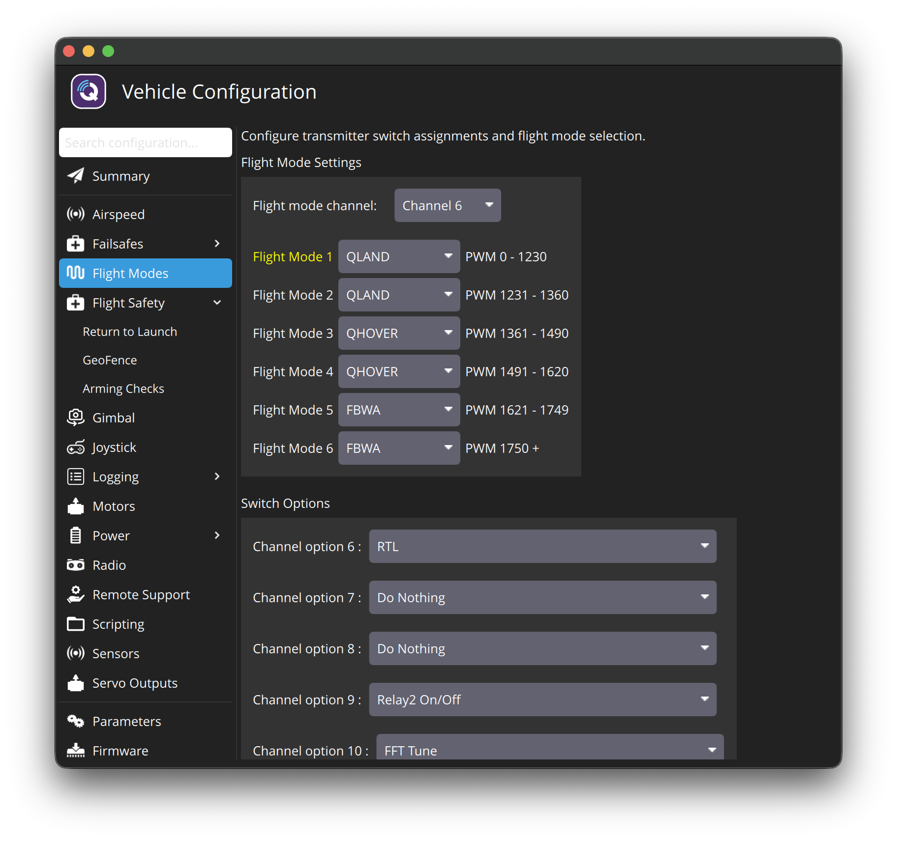
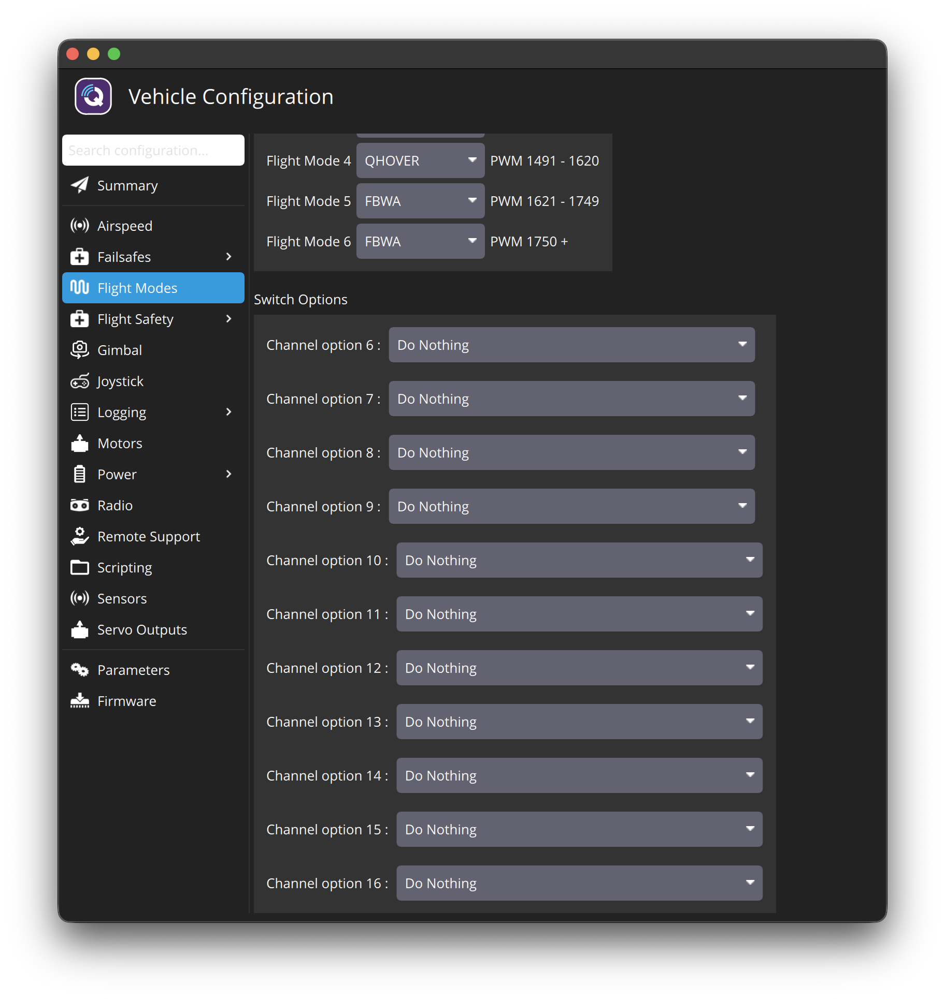
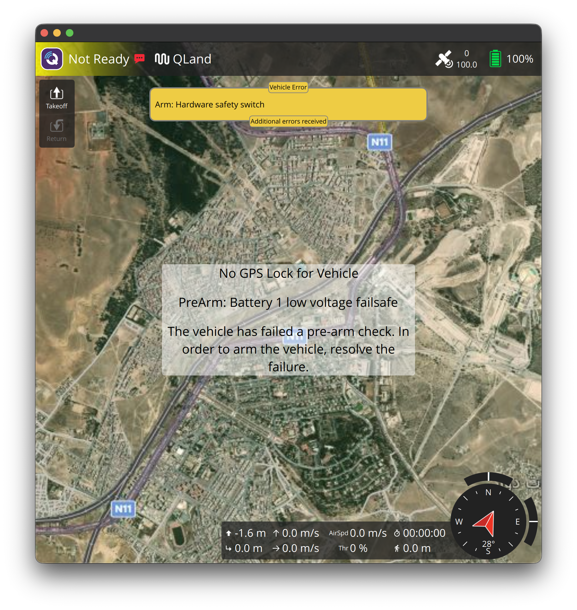

FlySky i6X: test it, set up your switches, calibrate
Goal: your switch/stick plan working in ArduPlane. SWA = motors on/off, SWC = idle / drone / airplane, left stick = throttle, right stick = pitch + turning. Then QGC radio calibration and a test of every switch, with no battery and no props.
backups/params_after-guide04.params. The step-by-step history below is kept as a log. Boxes marked Superseded were early ideas that turned out wrong. Jump to the final summary.- USB only. No LiPo. Propellers OFF. The receiver gets its power from the Pixhawk's RC IN port over USB, so the radio works without a battery.
- The motors cannot spin in this guide (no battery, and arming is still blocked by PreArm checks). We only check that the Pixhawk sees the right signals.
Our plan in pictures (rev 2, 03:53)
| Stick | Surfaces | Movement | Pixhawk output |
|---|---|---|---|
| Right stick ←→ (roll, CH1) | 2 main-wing servos (ailerons) | Opposite: one up, one down | MAIN 1–2 Aileron |
| Right stick ↑↓ (pitch, CH2) | 2 tail-wing servos | Together: both up / both down | MAIN 3–4 VTailLeft/Right |
| Left stick ←→ (yaw, CH4) | 2 tail-wing servos | Opposite: one up, one down | MAIN 3–4 VTailLeft/Right |
| Left stick ↑↓ (throttle, CH3) | motors | more / less power | MAIN 5, 6, 8 |
| automatic | 2 front tilt servos | motors up (drone) ↔ forward (airplane), plus yaw in drone mode | AUX 1–2 TiltMotorFront… |
ArduPlane/Attitude.cpp, 4.7.2). In airplane mode the surfaces work fully. A separate SWD switch isn't needed, and it would be risky: switching the V-tail off in airplane mode means no pitch/yaw control. Note: without a GPS fix (indoors) ArduPlane can't estimate speed, so on the desk the surfaces may still move when you test. That's normal.How the Pixhawk sees your radio
- FlySky i6X → (2.4 GHz) → iA10B receiver (Output mode PWM: one wire per channel) → PPM encoder board (combines them into one PPM signal) → Pixhawk RC IN. Working since 19:48 (C5).
- Each stick/switch/knob = one channel (CH1, CH2, …). ArduPlane decides what each channel does.
- Current ArduPlane settings (from your backup): CH1 roll · CH2 pitch · CH3 throttle · CH4 yaw · CH5 = arm/disarm (
RC5_OPTION=153, already!) · CH6 = RTL (leftover) · flight modes on CH8.
Part 0: Save a backup first (also finishes Guide 03)
Save the parameters before we change anything
Vehicle Configuration → Parameters → Tools (top-right) → Save to file… → backups/params_after-guide03.params.
This is Guide 03 step F. I'll use it to confirm your orientation and calibrations, and as the "undo" point for this guide.
Part A: Your plan → ArduPlane
| You want | ArduPlane feature | How it behaves | Verdict |
|---|---|---|---|
| SWA: all motors on/off | Arm/Disarm switch (RC5_OPTION = 153) | Switch down (signal high) → arms (only if all safety checks pass). Switch up (signal low) → disarms unconditionally: motors stop at once. (Tested 20:32.) | ✅ Good. ⚠️ In the air, SWA off = motors stop = the plane falls. Treat SWA as an emergency kill switch, only flipped on the ground (or in a real emergency). |
| SWC up: idle, "turns motors off gradually and safely" | Flight mode QLAND | In the air: descends slowly, lands vertically, stops the motors and disarms by itself. On the ground: the board refuses to arm in QLAND ("QLand mode not armable"), so motors stay off. | ✅ This is exactly the "safe idle" you described |
| SWC middle: drone mode, 3 motors | Flight mode QHOVER | VTOL with all 3 motors, front motors pointing up. Holds its height when the throttle stick is centred. | ✅ Recommended for the first hovers (alternative: QSTABILIZE, where the throttle sets motor power directly; harder) |
| SWC down: airplane mode, front 2 motors only | Flight mode FBWA | Front motors tilt forward (gradually, Q_TILT_RATE_DN = 25°/s), the tail motor stops once flying speed is reached, and the wings + V-tail take over. ArduPlane does this transition by itself. | ✅ Exactly your airplane mode |
| Left stick up/down: speed | Throttle (CH3) | QHOVER: up = climb, centre = hold height, down = descend. FBWA: forward thrust of the 2 front motors. QLAND: ignored. Must be fully down to arm. | ✅ |
| Right stick up/down: pitch | Pitch (CH2) | Nose up/down | ✅ standard |
| Right stick left/right: yaw | Normally roll | ⚠️ See the recommendation below | |
| VrB knob: roll | A knob as the roll control | ||
- A stick springs back to centre when you let go. A knob stays where you left it. Roll on a knob means: turn it a bit and the plane keeps banking (or in hover keeps leaning and sliding sideways) until you find the exact centre again by feel.
- Roll is the axis you correct most often and fastest, in hover and in airplane flight. A knob is far too slow for that. In a gust or after the transition, this alone can crash the Y3.
- ArduPlane, the autopilot's stabilization and all its documentation assume the standard layout. Instructors, simulators and every tutorial also use it.
Recommended = standard "Mode 2" (what your i6X already does by default):
| Up / down | Left / right | |
|---|---|---|
| Left stick | Throttle (CH3) ✅ as you wanted | Yaw (CH4): turn left/right |
| Right stick | Pitch (CH2) ✅ as you wanted | Roll (CH1): bank left/right |
So the only difference from your plan: yaw moves to the left stick (left/right), roll goes on the right stick (left/right), and the VrB knob stays free.
✅ Decided (03:53): standard layout. Roll stays on the right stick, VrB unused.
Part A2: Your extra points (03:46)
| Drone mode (QHOVER/QLAND) | Airplane mode (FBWA) | |
|---|---|---|
| Roll | Left vs right front motor speed (more thrust on one side) | Ailerons (wing servos, MAIN 1–2) |
| Pitch | Front motors vs tail motor | V-tail both surfaces same direction (MAIN 3–4) |
| Yaw | The 2 tilt servos tilt opposite ways (VectoredYaw) | V-tail surfaces opposite directions |
Part B: Settings on the FlySky i6X transmitter
i6X basics: hold OK = open the menu · UP/DOWN = move · OK = select · hold CANCEL = save and go back. (Menu names below are from FlySky i6X guides; your firmware may word them slightly differently. If you can't find one, send a photo of the screen.)
Assign the switches to channels
- Turn the i6X on. If it beeps and shows a warning: push all 4 switches (SWA, SWB, SWC, SWD) UP (away from you) and the left stick fully DOWN. The beeping stops and the main screen appears. This is FlySky's safety check: it won't start with throttle up or a switch on. (Still beeping after that? The batteries may be low. Check the battery icon on the screen.) (added 03:56)
- Hold OK → Functions setup (wrench icon) → Aux. channels.
- Set Channel 5 → SwA.
- Set Channel 6 → SwC.
- Hold CANCEL to save.
We use CH6 for SWC (instead of the old CH8). That works with the i6X's standard 6 channels, so there's nothing extra to unlock.
Check these 3 things (normally already fine)
- Trims at zero: the small trim buttons next to the sticks. The screen's trim markers should be centred. QGC asks for this: "Before calibrating you should zero all your trims and subtrims." (Also: Functions setup → Subtrim: all 0.)
- End points 100%: Functions setup → End points: all channels 100%.
Receiver output = PPM⚠️ Superseded: with your PPM encoder it must be PWM (C5). System setup → RX setup → Output mode → PPM. It already works as PPM (boot message), so don't change it if it says PPM.
Part C: See your radio in QGC
Radio page: does every control move the right bar?
- QGC: Vehicle Configuration → Radio.
- Transmitter on. You see channel bars. Move each control one at a time:
| Move | Bar that must move |
|---|---|
| Right stick left/right | Channel 1 (Roll) |
| Right stick up/down | Channel 2 (Pitch) |
| Left stick up/down | Channel 3 (Throttle) |
| Left stick left/right | Channel 4 (Yaw) |
| SWA | Channel 5: jumps between ~1000 and ~2000 |
| SWC (3 positions) | Channel 6: ~1000 / ~1500 / ~2000 |
📸 Screenshot with SWC in the middle. Nothing moves? Check Part B, and that the receiver's LED is solid (blinking = not bound to the transmitter; rebind like in your video).
Bars don't move? Find where the signal stops (04:03)
Your result (04:03): receiver LED solid red, but the Radio page bars don't react, and in Calibrate step 2 Next stays grey.
- Solid LED on the iA10B usually means it's bound and receiving the transmitter (blinking = no link). So the radio link itself looks OK ✅.
- Grey Next is by design: on that step QGC waits until it sees you move the stick, then continues by itself (QGC 5.1.5 source: "stick detect"). Since it sees nothing, it never continues.
- So the problem is between the receiver and the Pixhawk: the right signal isn't arriving on RC IN.

Two real reasons it got stuck:
- The mode box says "Mode 1". In Mode 1 the throttle is on the RIGHT stick (see the blue dot at the top of the right circle). Your i6X is Mode 2 (throttle on the left).
- "Not Mapped" during calibration is normal: QGC learns each stick as you move it. On "Move the Throttle stick all the way up", Next stays grey on purpose. It continues by itself once it sees the stick go up and stay there for a moment.
First a quick test without calibrating: move each stick and watch the Raw Channel Monitor dots. Right stick → dots 1 and 2 move; left stick → dots 3 and 4. If a dot moves, everything is fine. The checks below are only needed if no dot moves.
Only if no Raw Channel Monitor dot moves when you move the sticks, do these 4 checks:
- On the Calibrate screen click Cancel.
- What does the Pixhawk receive? Purple Q icon → Analyze Tools → MAVLink Inspector → in the list click RC_CHANNELS. Write down
chancount,chan1_raw…chan6_raw, andrssi. Move the right stick: doeschan1_rawchange? 📸 Screenshot. - Transmitter output mode: on the i6X, hold OK → System setup → RX setup → Output mode. Photo the screen (it shows PWM or PPM, and i-BUS or S.BUS). Press CANCEL (short) to leave without changing.
- Photo of the receiver: the iA10B's end with its cable sockets, so I can see which socket the cable to the Pixhawk comes from, and whether other cables go to the small black board from your earlier photo.
With these I can tell exactly what to change: usually either the output mode (PWM ↔ PPM) or which receiver socket the cable sits in.
Dots don't move: fix the receiver → Pixhawk signal (04:07)
Your result (04:07): dots don't move in any mode (1–4). The Pixhawk receives a PPM signal (8 channels), but with frozen values: sticks centred, throttle low, the rest middle. That's the typical "default / no-input" pattern. The PPM signal exists, but it doesn't carry your sticks. Most likely causes:
- The i6X sends PWM (one channel per socket) while the Pixhawk needs PPM (all channels on one wire), or
- the signal goes through the small black board (probably a PPM encoder) from your photo, which outputs these default values when its inputs don't deliver.
The fix (simplest, most common working setup): the iA10B makes PPM by itself, on its PPM/CH1 socket. One cable straight to the Pixhawk, no extra board.
- Check the link first: transmitter off → the iA10B LED should blink. Transmitter on → LED solid. (Solid even with the transmitter off, or blinking with it on? Tell me; then it's a binding issue.)
- 📸 Before unplugging anything, photo the receiver end and the Pixhawk RC IN end (for the log).
- i6X → PPM: hold OK → System setup → RX setup → Output mode → select PPM (leave the Serial line as it is) → hold CANCEL to save. The transmitter must be on and connected to the receiver while you do this, because the setting is sent to the receiver.
- Cable: USB unplugged (Pixhawk off). One 3-wire servo cable from the iA10B socket labelled PPM/CH1 (or CH1) directly to the Pixhawk RC IN. If it currently goes through the small black board, take that board out of the path (keep it). Match the wires to the labels printed on both: − = black/brown, + = red, S (signal) = white/yellow/orange. A reversed plug won't work and can damage things, so check the labels.
- Reboot the Pixhawk: plug the USB back in, wait 30 s. (The Pixhawk detects the RC protocol at start-up.)
- Test: Vehicle Configuration → Radio → move the sticks → Raw Channel Monitor dots 1–4 must move.
Still frozen? Send me the 2 photos + a photo of the i6X Output mode screen.
- Pixhawk on USB (this powers the receiver), transmitter on, receiver LED solid.
- Hold OK about 2 s → the main menu shows 2 icons: System setup (left) and Functions setup (right, wrench).
- Select System setup (UP/DOWN to move, short OK to open).
- Scroll with DOWN to RX setup → short OK.
- Scroll to Output mode → short OK. You see 2 lines: PWM / PPM (top) and Serial: i-BUS / S.BUS (bottom). The selected word is highlighted. 📸 Photo this screen.
- On the top line choose PPM (UP/DOWN to the line, short OK to toggle). Leave the bottom line on i-BUS (default). It only affects the receiver's separate i-BUS/serial socket, which we don't use, so it has no effect on PPM. (04:16)
- Hold CANCEL about 2 s to save. (Short CANCEL = back without saving.) Then short CANCEL until you're back on the main screen.
LED test: with the transmitter off, the iA10B LED should start blinking within a second or two. If it stays solid with the transmitter off, tell me.

While you hold the left stick right, raw channel 4 stays centred, and channel 3 (throttle) is still low. So the sticks still aren't reaching the Pixhawk. The "Throttle" that QGC mapped in the previous step is not real: it latched onto a channel that only jittered (its bar sits at about 58% while channel 3 is low). Click Cancel, which doesn't save anything. Don't finish a calibration with frozen values.
Calibration only makes sense once the Raw Channel Monitor dots follow the sticks. First finish C3 (PPM + saved with hold CANCEL, direct cable from PPM/CH1, USB replugged).
Is the receiver really talking to THIS transmitter? Not needed: LED blinks with TX off = bound (04:28). Check, then rebind (04:26)
Your answers (04:26): PPM saved ✅ · cable direct from PPM/CH1 ✅ · USB replugged ✅ · LED solid even with the transmitter OFF ⚠️ · in QGC only "roll" moves, randomly.
A receiver that's really linked should react when its transmitter goes off: the LED changes and the outputs go to failsafe. Solid with the transmitter off + frozen values + random jitter all point to no real radio link (not bound to this i6X / this model memory), even though the LED is on.
Check 1: does the i6X see the receiver? On the i6X main screen (transmitter on, Pixhawk on USB): a bound iA10B sends back its voltage, so near the top you should see an RX battery value (about 5 V) and/or signal bars. 📸 Photo the main screen. No RX value / "--" = not linked, so do Check 2.
Check 2: rebind (FlySky's standard procedure):
- Transmitter OFF. Pixhawk USB unplugged (receiver unpowered).
- Put the bind plug (small jumper cable from the FlySky box) into the iA10B socket labelled B/VCC. Leave the PPM/CH1 → RC IN cable where it is.
- Plug the Pixhawk USB in (this powers the receiver). The receiver LED should flash fast = bind mode.
- On the i6X: hold the BIND key (on the transmitter) while switching it ON. (Alternative: hold OK → System setup → RX setup → Bind with a receiver.) The screen shows binding; the receiver LED goes solid.
- Transmitter OFF → unplug USB → remove the bind plug from B/VCC.
- Plug USB back in, transmitter ON. LED solid. Now switch the transmitter OFF: the LED should change (blink). Switch it back ON.
- Check Output mode = PPM again (System setup → RX setup → Output mode → hold CANCEL). A new bind can reset it.
- Unplug/replug USB, wait 30 s → Radio page → move the sticks → do the Raw Channel Monitor dots 1–4 follow?
Also check: the i6X model shown on the main screen is the same model you bound (one model memory = one bind).
The radio link is fine. The small black board is the problem (04:28)
Correction (04:28): with the transmitter off the LED blinks, so the receiver is bound ✅. Skip C4 (rebind).
What explains everything you see: the signal passes through the small black board (a PPM encoder) from your earlier photo. It takes separate PWM channels from the receiver and builds a PPM signal for the Pixhawk.
- The receiver now outputs PPM on its PPM/CH1 socket and nothing usable on the others. The encoder gets no proper inputs and sends its default values: throttle low, everything else centred. That's exactly your frozen pattern.
- The encoder's input 1 receives the receiver's PPM pulse train, which it can't read as one channel. That gives "roll" (channel 1) jumping randomly. ✔ Matches.
So the cable on RC IN most likely comes from the encoder, not straight from the receiver (easy to miss: the encoder sits inline). 📸 Please send a photo of the receiver + small board + RC IN cable to confirm.
Fix, option A (recommended, simplest): remove the encoder
- USB unplugged.
- Unplug the encoder from the Pixhawk RC IN and from the receiver (keep it in a box).
- Use a 3-wire servo extension lead (female ↔ female, black/red/white; often in the FlySky or Pixhawk box): iA10B PPM/CH1 socket → Pixhawk RC IN. Match − black / + red / S white to the labels on both.
- i6X Output mode stays PPM.
- USB in, wait 30 s → Radio page → dots 1–4 must follow the sticks.
Option B (keep the encoder): i6X Output mode back to PWM, and the encoder's input wires go to receiver sockets CH1…CH8 in order. More wires and more failure points, which is why I recommend A.

Pixhawk RC IN ← black/red/white lead ← small PPM encoder board (blue LED) ← multi-colour wires ← receiver. The receiver sends PPM, but the encoder expects separate PWM channels → frozen values.
Two fixes: B (test now, no rewiring): i6X Output mode → PWM, so the encoder gets what it expects. A (final, cleaner): remove the encoder, direct female–female servo lead receiver PPM/CH1 → RC IN, Output mode PPM.
Part D: Radio calibration in QGC (rev 19:48, exact QGC 5.1.5 flow)
Teach the Pixhawk each stick's min / centre / max
Before: USB only, no LiPo, no props. i6X on, all switches up, throttle fully down, trims centred.
- QGC → purple Q icon → Vehicle Configuration → Radio.
- Above the two stick drawings: dropdown = Mode 2. Checkbox "Centered Throttle" = unticked.
- Bottom: click Calibrate → popup "Zero Trims … Please ensure all motor power is disconnected AND all props are removed" → OK.
- "Lower the Throttle stick all the way down… Click Next": throttle down, other sticks centred → Next.
- Then QGC asks one move at a time and goes on by itself when it sees the stick held at the end (no clicking):
- Throttle (left stick) up and hold → then down and leave it.
- Yaw (left stick) right and hold → then left.
- Roll (right stick) right and hold → then left.
- Pitch (right stick) up (push away from you) and hold → then down.
- "Move all the transmitter switches and/or dials back and forth to their extreme positions": SWA down/up, SWB, SWC up/middle/down, SWD, VrA and VrB fully both ways → Next.
- "All settings have been captured. Click Next to write the new parameters to your board." → Next. Done.
- Put all switches back up, throttle down.
If it says "Throttle channel reversed": i6X Functions setup → Reverse → Ch3 → Rev, hold CANCEL, redo. A step hangs: Cancel (nothing is saved) and tell me which step.
guides/guide4_screenshots/. Vehicle Messages: PreArm: Radio failsafe on should be gone with the i6X on.
Raw Channel Monitor with all switches up: 1, 2, 4 centred · 3 low (throttle down) · 5 low = SWA up · 6 low = SWC up · 7, 8 mid (unused) · 9–18 none (encoder sends 8 ch).
What this means: SWA up = low = disarmed (ArmDisarm: low disarms), so up = safe ✅. SWC up = low → Flight Mode 1 slot = QLand, so up = idle/land, as planned ✅. No transmitter reversing needed.
backups/params_after-radio-cal.params
| Check | Value | Meaning |
|---|---|---|
| Board orientation | AHRS_ORIENTATION=0 | ✅ Your Guide 03 change is stored (arrow = nose) |
| Accelerometer calibration | INS_ACCOFFS/SCAL set | ✅ Done (Guide 03) |
| Level horizon | AHRS_TRIM_X/Y ≈ −0.016 / −0.006 | ✅ Done (Guide 03) |
| Radio calibration | RC1–8: about 1000–2000, centre ~1500, throttle min 1000 | ✅ Done now (Part D) |
| Compass | External M8N, offsets −76 / 25 / 267 | Offsets come from an older calibration (unchanged since Guide 02). Fine for now; a fresh outdoor calibration before flying. |
| ⚠️ Parameter list | 1,276 params (earlier 4.7.2 backups: 1,430) | 144 Q_A_/Q_P_/Q_M_/Q_WP_/Q_LOIT_/Q_WVANE_ (VTOL tuning) + 10 GPS1_* are missing, and GPS1_TYPE=0, SERVO7_FUNCTION=0. Most likely QGC downloaded the list before the Pixhawk had finished starting up (those groups appear once QuadPlane/GPS start). Check: Parameters → Tools → Refresh, then save again. Don't change parameters until this is clear. |
Switch the GPS back on (GPS1_TYPE = 1 "Auto") (20:03)
- QGC → Q icon → Vehicle Configuration → Parameters.
- Search box (top): type
GPS1_TYPE. Click the row → a box opens → dropdown Auto (= 1) → Save. - Tools (top-right) → Reboot Vehicle → OK. GPS type is only read at start-up.
- Wait ~60 s until QGC reconnects and finishes loading parameters.
- Then: Tools → Refresh → Save to file →
backups/params_after-radio-cal_refresh.params.
Meaning: GPS1_TYPE tells ArduPilot what kind of GPS is on port 1. 0 = none (GPS off), 1 = Auto (detects your u-blox M8N).
backups/params_after-radio-cal_refresh.params (1,286 params)✅ GPS back:
GPS1_TYPE=1, and the 10 GPS1_* settings are visible again.⚠️ The 144 VTOL settings (
Q_A_* Q_P_* Q_M_* Q_WP_* Q_LOIT_* Q_WVANE_*) are still missing after a reboot + refresh, and SERVO7_FUNCTION is still 0 (QuadPlane normally auto-assigns it). So QuadPlane is not finishing its start-up this time (it did at 02:47–03:54). In the 4.7.2 source, QuadPlane::setup() stops with a "Config error" such as "Not enough memory for quadplane" or an allocation error. Needed: the Vehicle Messages from a fresh boot. No parameter changes until we know why.
- ✅
QuadPlane initialised, Frame: TRIwith no Config error, so QuadPlane does start. - ✅ GPS works:
GPS 1: detected u-blox(HW 00070000). - ✅ "Radio failsafe on" is gone, and Sensor Status shows RC receiver: Normal (radio fixed + calibrated).
- Remaining PreArm (all expected on the bench): Battery low (USB only) · GPS bad fix (indoors) · Compass not calibrated (to do) · AHRS not using EKF (needs GPS + compass) · Hardware safety switch (not pressed).
- Open: why QGC's list lacks the Q_ tuning groups although QuadPlane starts. Test: search
Q_A_RAT_RLL_Pin Parameters.
Q_A_RAT_RLL_P wasn't there, then after Tools → Refresh it appeared with 0.45 (unchanged). Reason: QGC downloads the parameter list the moment it connects, but QuadPlane adds its ~144 settings a few seconds later (boot log: QuadPlane initialised ~2 s after start). Rule from now on: after every reboot/reconnect, wait ~30 s, then Parameters → Tools → Refresh before editing or saving parameters.backups/params_after-radio-cal_full.params, 1,430 params. This is the undo point before Part E.Part E: Flight modes on SWC + SWA as arm switch
Flight Modes page
Vehicle Configuration → Flight Modes. You see "Flight mode channel:", 6 "Flight Mode" dropdowns (each with a PWM range), and "Switch Options".
- Flight mode channel: change from Channel 8 to Channel 6.
- Set the 6 flight modes. SWC sends ~1000 / ~1500 / ~2000, which lands in slots 1, 4 and 6. I also fill the in-between slots so a slightly-off switch value can never pick a surprise mode:
| Slot (PWM range shown by QGC) | Set to | SWC position |
|---|---|---|
| Flight Mode 1 (0 – 1230) | QLAND | UP = idle / safe land |
| Flight Mode 2 (1231 – 1360) | QLAND | (safety filler) |
| Flight Mode 3 (1361 – 1490) | QHOVER | (safety filler) |
| Flight Mode 4 (1491 – 1620) | QHOVER | MIDDLE = drone mode |
| Flight Mode 5 (1621 – 1749) | FLY_BY_WIRE_A (FBWA) | (safety filler) |
| Flight Mode 6 (1750 +) | FLY_BY_WIRE_A (FBWA) | DOWN = airplane mode |
- Switch Options, under "Channel option 5": must be ArmDisarm (it already is,
RC5_OPTION=153). Leave it. - Switch Options, under "Channel option 6": currently RTL (old leftover). Change it to Do Nothing. Channel 6 is now the mode switch and can't have a second job.
Live check: on this page, the words "Flight Mode 1…6" on the left of the dropdowns are white, except the one currently selected by your switch, which turns yellow. Flip SWC: up → Flight Mode 1, middle → 4, down → 6 should turn yellow.
Changes on this page are saved immediately. If your SWC is physically "down = 1000" instead of "up = 1000", the order flips (up = airplane). Part G shows which. We can reverse CH6 on the transmitter if you prefer.

Changed:
FLTMODE_CH 8→6, FLTMODE1..6 17/19/5/17/11/5 → 20/20/18/18/5/5.RC6_OPTION 4 → 0). SWC up → Flight Mode 1, middle → 4, down → 6 ✅.How to read the yellow labels (QGC 5.1.5 source,
APMFlightModesComponentController.cc): "Flight Mode N" yellow = the slot your switch's signal falls into. "Channel option N" yellow = channel N's signal is above 1800 µs (switch at its high end), whatever job it has. So "Channel option 6" being yellow with SWC down is normal and harmless now that it's "Do Nothing".Part F: Clean up old leftovers
Old switch functions + stick-arming
Vehicle Configuration → Parameters. For each line: search the name → click the value → the Value Editor opens → type the new value → Save.
| Parameter | Now | Set to | Why |
|---|---|---|---|
RC9_OPTION | 34 | 0 | Old switch jobs on channels 9–16 from earlier experiments. Your radio (PPM) only sends 8 channels. Clearing them means no hidden function can ever trigger. RC16_OPTION=154 is a second arm/disarm; we want only SWA. |
RC10_OPTION | 162 | 0 | |
RC12_OPTION | 28 | 0 | |
RC13_OPTION | 24 | 0 | |
RC14_OPTION | 16 | 0 | |
RC16_OPTION | 154 | 0 | |
ARMING_RUDDER | 2 | 0 | Now 2 = "arm and disarm by holding the left stick right/left". With yaw on the left stick, a long full-left yaw with low throttle could disarm. 0 = only SWA arms/disarms, matching your plan. |
Then reboot the Pixhawk (unplug/replug USB, 30 s still).
RC9_OPTION 34→0, RC10 162→0, RC12 28→0, RC13 24→0, RC14 16→0, RC16 154→0). Channel 5 isn't listed on this page; RC5_OPTION=153 (ArmDisarm) stays.
ARMING_RUDDER 2 (ArmOrDisarm) → 0 (Disabled). The motors can only be armed with SWA now, not with the sticks.Part G: Test every switch (no battery, no props)
Watch QGC's top bar (Fly view)
| Do | QGC should show |
|---|---|
| SWC up | Flight mode QLand |
| SWC middle | QHover |
| SWC down | FBWA (the front tilt servos would move here, but nothing is connected yet) |
| SWA to the "on" position, throttle down, SWC middle | It will not arm yet. Messages list the PreArm reasons (safety switch, battery, GPS…). That's expected for now. We only confirm Channel 5 changes on the Radio page. |
Tell me which SWA position is "high" (~2000) = arm. Most people want SWA down = motors on. If it's the other way round, we reverse CH5 on the transmitter.

Part H: Save and report
Backup + messages
First Parameters → Tools → Refresh (complete list), then Tools → Save to file… → backups/params_after-guide04.params, and copy-paste the Vehicle Messages.
backups/params_after-guide04.params (1,430 params) contains exactly these changes vs. params_after-radio-cal_full.params:
| Parameter | Before → After | Meaning |
|---|---|---|
FLTMODE_CH | 8 → 6 | SWC (channel 6) picks the flight mode |
FLTMODE1…6 | QStab, QLoiter, FBWA, QStab, RTL, FBWA → QLAND, QLAND, QHOVER, QHOVER, FBWA, FBWA | SWC up = land/idle, middle = drone, down = airplane |
RC6_OPTION | 4 (RTL) → 0 | SWC has only one job |
RC9/10/12/13/14/16_OPTION | old jobs → 0 | No leftover switch functions |
ARMING_RUDDER | 2 → 0 | Arm only with SWA, never with the sticks |
GPS1_TYPE | 0 → 1 (step D2) | GPS switched on (Auto) |
RC1–8_MIN/MAX/TRIM | calibrated (Part D) | Pixhawk knows each stick's range |
Still to come (later guides, not now)
- Radio failsafe (what happens if the transmitter is switched off or out of range): a separate step. With PPM receivers this needs a careful check.
- Arming test with motors: only after the wiring guide, with props off.
Report back
- Part 0:
backups/params_after-guide03.paramssaved Part A: stick layout?✅ standard (roll on the right stick)Part A2: SWD?✅ not needed (surfaces automatically quiet in drone mode)- Part C/D: Radio page screenshots (before and after calibration). Did "Radio failsafe on" disappear?
- Part G: which mode appears for each SWC position; which SWA position is "on"
- Part H:
backups/params_after-guide04.params+ Vehicle Messages - Anything you couldn't find on the i6X (photo of its screen)
Sources
- ArduPilot: Auxiliary functions (153 ArmDisarm: arms high subject to checks, "disarms unconditionally if brought low"; LOW < 1200 µs, HIGH > 1800 µs)
- ArduPilot: Flight mode configuration (FLTMODE_CH, 6 slots, 3-position switch)
- QGC 5.1.5: APMFlightModesComponent.qml (PWM slots 0–1230 / 1231–1360 / 1361–1490 / 1491–1620 / 1621–1749 / 1750+, "Flight mode channel", "Switch Options")
- QGC 5.1.5: RemoteControlCalibration.qml (Calibrate, Mode 1–4, zero trims, props/power warning)
- ArduPilot forum: Connecting an FS-iA10B to Pixhawk (PPM from the PPM/CH1 port into RC IN; ~8 channels)
- ArduPilot forum: Pixhawk 2.4.8 channel issue (set the transmitter output mode to PPM first)
- FS-iA10B manual (manuals.plus) (bind plug in B/VCC → LED flashes fast → hold BIND key while powering the transmitter → LED solid)
- ArduPilot: QuadPlane flight modes (QHOVER, QLAND, QSTABILIZE)
- FS-i6X menu guide (Parallax) (Functions setup → Aux. channels; System → RX setup → Output mode)
- FlySky radio setup (Unmanned Tech) (assigning SWA/SWC to aux channels)